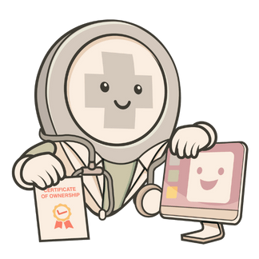
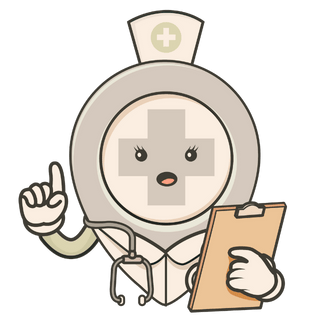
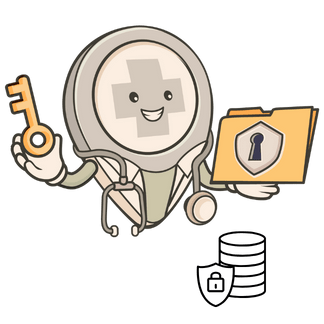
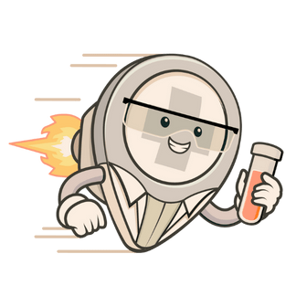
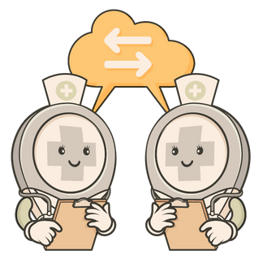
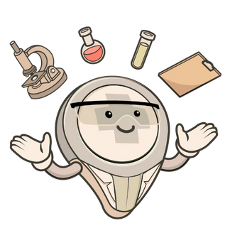

Five principles to build toward.
These five proposed principles describe the health apps we want to see built. Each connects a belief to practical requirements. Four end with a question you can ask a software provider; the fifth ends with a question for builders.
They are aspirations for software, not delivered LFH capabilities or a development schedule. No clinical product is available through LFH.
Local-first software keeps a usable copy of data on your device and supports work without a constant internet connection. Sharing between systems requires additional design and testing.
The numbers beside each principle refer to the seven local-first ideals named by Ink & Switch in 2019. The principles are LFH’s own adaptation, independent of Ink & Switch.
Keep records usable when people change tools.
What it means for you
A clinic should be able to switch software without losing the records it is responsible for. A patient should be able to obtain their records and take them to the next clinic.
What it requires
- A documented way to export every record, in a format another tool can read.
- Continued access to existing records, even after a subscription or contract ends.
- No fee to get existing records back.
The question to askCan I retrieve every existing record without a fee, and what would another tool need to use it?
Support essential work offline.
What it means for you
Essential recordkeeping should stay available when the connection drops, with documented limits. Work that needs a connection should be clearly identified.
What it requires
- A published list of which tasks work without a connection.
- A published list of what waits until the connection returns.
- Tests of the offline tasks and their limits, with findings available to the people using the software.
The question to askIf the internet goes down at 10 a.m., what can my clinic still do, and what has to wait?
Make records useful across care settings.
What it means for you
The next clinic, lab, or pharmacy should be able to read and use the record. Sharing between systems requires additional design and testing.
What it requires
- Shared health data standards, such as FHIR (a common standard for exchanging health records).
- The source and date of each record kept with it, so the next clinician knows where it came from.
- Testing with at least one other tool, with the results published.
The question to askIf I send this record to another clinic, can their software use it, and can they see who wrote it and when?
Publish the foundations for others to build on.
What it means for you
Open code and documentation should let builders learn from each other and adapt software to local needs. A clinic should be able to keep using the tools it relies on.
What it requires
- Code, license and documentation available together, so others can learn from the software and maintain it.
- A clear account of what a clinic would need to keep reading its records if the original builder stops supporting the software.
The question to askIf you stop supporting this software, what would we need to keep reading our records, and who could maintain the software?
A question for buildersIs the code public, under what license, and who decides what changes?
Test with the people doing the work.
What it means for you
Clinicians and patients should help shape what matters first. Priorities should reflect the work and be open to question.
What it requires
- Testing with clinicians and patients in real settings before making claims about usefulness.
- Documented findings and limits, including what did not work.
A question for buildersWho tested this, where, and what did they say was missing?
One policy, stated plainly
Paying for software or support should never be a condition of retrieving existing records.
Background and resources for builders
Where the record lives
Where a record is kept shapes what happens when the connection drops. All three approaches are still used today. These are simplified examples: some cloud apps work offline too, and sharing features vary by app.
Standalone example
Records stay on a clinic computer. You can use them without internet, but moving them to another device takes a separate step.
Hosted example
Records are kept on the software provider’s computers. You open them over the internet, so access depends on the service and your connection.
Local-first example
A working copy stays on your device. Essential work should continue offline, with updates shared when devices can connect.
Twelve goals for health apps
These are the qualities we want health apps to have.
These twelve goals adapt the seven local-first ideals from Ink & Switch to the responsibilities that come with health records. The adaptation is LFH’s own, independent of Ink & Switch.

Work offline
Essential recordkeeping should stay available when the internet goes down.
Keep your records
Patients and providers should be able to keep and move the records they need.

Keep using the software
Clinics should be able to keep using their software as their needs and providers change.

Standards you can check
Health apps should make their standards and evaluation results clear.

Privacy by design
People should know what leaves their device and who can access it.
Protect the record
Protection for devices, backups and shared records should be built in and explained.

Ready when needed
The record should be ready when a patient sits down.
Work together
Clinicians and patients should be able to share records with their source and date intact.

Copies that stay in step
Changes should travel between devices, with a clear way to resolve conflicting edits.
Usable local copies
A useful copy of the record should stay on the clinic’s own devices.
Open foundations
Open code and clear documentation should give others a foundation to build on.

Freedom to move
People should be able to retrieve their existing records without a fee and choose their next tool.
Design problems for builders
Putting these principles into practice raises design problems that do not have settled answers.
- What counts as "essential"? Which clinic tasks must work offline on day one, and which can wait?
- Two people, one record. When two clinicians edit the same record offline, how should changes merge safely?
- Shared ownership in practice. How should a patient's copy and a provider's copy of the same record stay in step?
- Protecting local copies. How should devices, backups, and keys be protected when data lives on the device?
- Starting small with standards. What is the smallest useful set of FHIR resources to support first?
Pick one and email how you would approach it, or tell us which of the questions your own product cannot answer yet.
For builders
LFH’s mission sits within a wider local-first software community. These independent resources offer places to learn and explore; they are not endorsements of LFH or assessments of suitability for clinical use.
- LoFi — a community hub for discovering local-first resources and projects.
- Local-first Conf — a conference for people exploring and building local-first software.
- The Architecture Of Local-First Web Development — a developer’s perspective in Smashing Magazine, including when the approach may not fit.
- Martin Kleppmann on local-first software — a Software Engineering Radio interview and transcript covering architecture, synchronization and tradeoffs, from IEEE Computer Society and IEEE Software magazine.
Further reading
LFH is part of a wider conversation about software people can keep and use. These sources discuss the ideas; none is an endorsement of LFH.
“Local-first software: You own your data, in spite of the cloud”
The essay that named the seven ideals.
“The Cloud Is a Prison. Can the Local-First Software Movement Set Us Free?”
The local-first movement, outside health. It does not cover LFH.
In a 2022 interview with Stanford Medicine’s Dean Lloyd Minor, Reed Jobs discussed fragmented clinical records and people’s control over access to their data. Listen to their conversation on The Minor Consult.
Help shape these
These are proposals. Tell us what's missing, wrong, or unworkable.
Email hello@localfirsthealth.org with the subject "Principles feedback".